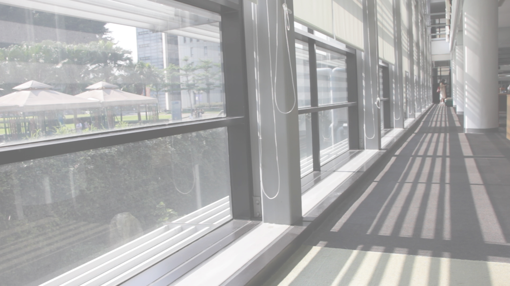

B
e
c
o
m
e
A
M
i
n
i
m
a
l
i
s
t

什麼是極簡主義 ? 街訪大調查
你知道要過上理想的生活，
真正需要的是哪些東西嗎？
所有的消費行為，
都是為了喜歡的生活所努力。
在這些日常中多思考一點的過程，
可能就能作為過上幸福生活的突破點。
極簡主義能讓生活的每件小事更有意義。
而每件小事堆疊出的你的生活，
也會更有價值。
真正需要的是哪些東西嗎？
所有的消費行為，
都是為了喜歡的生活所努力。
在這些日常中多思考一點的過程，
可能就能作為過上幸福生活的突破點。
極簡主義能讓生活的每件小事更有意義。
而每件小事堆疊出的你的生活，
也會更有價值。

身邊的極簡主義者: 人物專訪
過得幸福嗎？
「極簡主義」是探索生命的一個方法。
它讓我們在有限的條件下，
促使我們發掘事物的優先順序，
釐清真正理想的樣子，
讓付出能更有效的回收，
更學會珍惜每個收穫，
「希望你過得更幸福」，
這大概就是極簡主義者對彼此的期待。
「極簡主義」是探索生命的一個方法。
它讓我們在有限的條件下，
促使我們發掘事物的優先順序，
釐清真正理想的樣子，
讓付出能更有效的回收，
更學會珍惜每個收穫，
「希望你過得更幸福」，
這大概就是極簡主義者對彼此的期待。